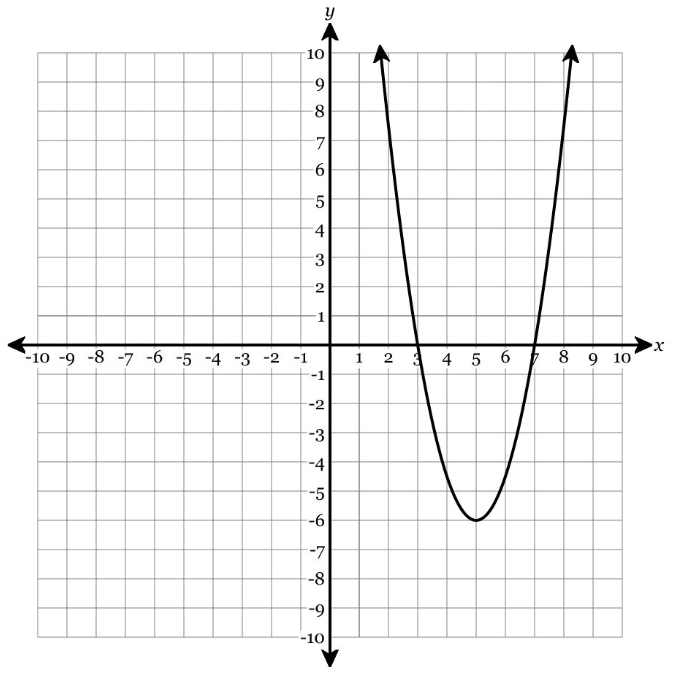

Show work and mark answers clearly.
1.
For \(f(x)=-x^2+6x-5\), determine and explain the key features.
- Find the vertex and axis of symmetry.
- Find the x- and y-intercepts.
- State the maximum/minimum value and range.
- Explain how \(a\), the vertex, and the discriminant connect to the graph.
Show work and mark answers clearly.
1.
Use the graph to analyze the quadratic and explain your reasoning.

- Estimate the vertex and x-intercepts.
- State where the function is increasing and decreasing.
- State the range.
- Explain how the vertex controls the maximum or minimum and the intervals of increase/decrease.
Show work and mark answers clearly.
1.
Compare the features of the two functions.
\(f(x)=(x-2)^2-9\) and \(g(x)=-(x-2)^2+9\)
- Compare their vertices and axes of symmetry.
- Compare their ranges.
- Compare their number of real solutions.
- Explain how the sign of \(a\) changes the interpretation of the vertex.
Show work and mark answers clearly.
1.
Analyze \(h(x)=2x^2+8x+11\).
- Find the vertex.
- Calculate the discriminant.
- Determine the number of x-intercepts.
- Explain how it is possible to know the range and number of real solutions without drawing a perfect graph.
Show work and mark answers clearly.
1.
A quadratic has zeros \(-1\) and \(7\), opens upward, and has y-intercept \(-14\).
- Write an equation.
- Find the axis of symmetry.
- Find the vertex.
- Use the vertex to state the range and explain your reasoning.
Show work and mark answers clearly.
1.
Use both the graph and equation to explain the key features.

Equation: \(y=-2(x+1)(x-5)\)
- Identify the zeros and axis of symmetry.
- Find or estimate the vertex.
- State the maximum/minimum value and range.
- Explain how intercept form and the graph work together.